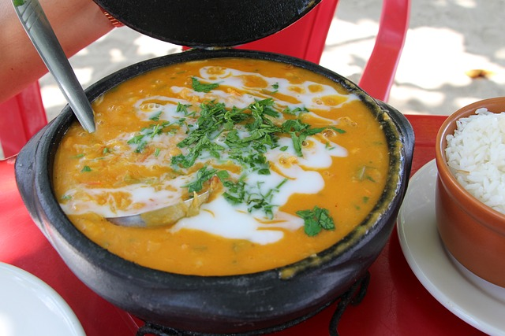
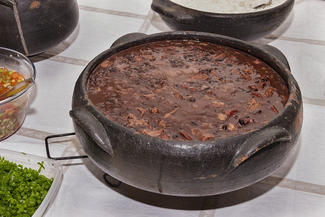

- Recheios opcionais: vatapá, camarão seco, pimenta, salada de tomate e cebola
Modo de Preparo:
1. Preparo do Feijão-Fradinho:
- Deixe o feijão-fradinho de molho em água por pelo menos 4 horas ou durante a noite.
- Escorra o feijão e bata no liquidificador ou processador de alimentos até obter uma massa grossa. Adicione um pouco de água se necessário para ajudar no processamento.
2. Tempere a Massa:
- Em uma tigela, misture a massa de feijão com a cebola picada, alho picado, pimenta malagueta (se estiver usando) e sal a gosto. Mexa bem até todos os ingredientes estarem incorporados.
3. Fritar os Acarajés:
- Em uma frigideira funda, aqueça o óleo vegetal e o óleo de dendê juntos em fogo médio-alto.
- Com uma colher, vá colocando porções da massa de feijão na frigideira quente, formando pequenos bolinhos. Cuidado para não colocar muitos de uma vez para não esfriar o óleo.
- Frite os acarajés por alguns minutos de cada lado, virando-os com cuidado para que fiquem dourados por fora e cozidos por dentro. Retire-os com uma escumadeira e deixe escorrer em papel toalha.
4. Montagem e Servir:
- Corte os acarajés ao meio sem separar completamente.
- Recheie com o vatapá, camarões secos, pimenta e uma salada de tomate e cebola, se desejar.
- Sirva os acarajés quentes como petisco ou como uma refeição completa.
Agora você está pronto para desfrutar desse delicioso quitute brasileiro! Aproveite o seu acarajé com os acompanhamentos de sua preferência.

Bobó de Camarão
Ingredientes:
500g de camarões médios ou grandes, limpos e descascados
500g de mandioca (aipim ou macaxeira) descascada e cortada em pedaços
1 cebola grande, picada
3 dentes de alho, picados
2 tomates maduros, sem pele e sem sementes, picados
1 pimentão verde, picado
1/2 maço de coentro fresco, picado
1/2 maço de cebolinha verde, picada
200ml de leite de coco
2 colheres de sopa de azeite de dendê
Suco de 1 limão
Sal e pimenta a gosto
Modo de Preparo:
Cozinhar a Mandioca:
Em uma panela, cozinhe a mandioca em água fervente até que fique macia. Escorra e reserve.
Preparo do Refogado:
Em uma panela grande, aqueça o azeite de dendê em fogo médio.
Adicione a cebola, o alho e o pimentão. Refogue até que fiquem macios e levemente dourados.
Acrescente os tomates picados e refogue por mais alguns minutos até que comecem a desmanchar.
Preparo do Bobó:
Em um liquidificador, bata a mandioca cozida com o leite de coco até obter um creme homogêneo.
Despeje esse creme na panela com o refogado de cebola, alho e tomate.
Mexa bem e deixe cozinhar por alguns minutos até engrossar ligeiramente.
Adicionar os Camarões:
Tempere os camarões com sal, pimenta e suco de limão.
Adicione os camarões temperados ao creme de mandioca na panela.
Cozinhe por mais alguns minutos até que os camarões fiquem rosados e cozidos.
Finalização:
Acrescente o coentro e a cebolinha picados ao bobó de camarão.
Prove e ajuste o tempero, se necessário, com sal e pimenta.
Cozinhe por mais 1-2 minutos para incorporar os sabores.
Servir:
Sirva o bobó de camarão quente, acompanhado de arroz branco e/ou farofa.
Decore com folhas de coentro fresco e pimenta malagueta, se desejar.
Agora é só saborear esse prato típico brasileiro cheio de sabor e aromas! O bobó de camarão é perfeito para uma refeição especial em família ou entre amigos. Bom apetite!

Feijoada
Ingredientes:
500g de feijão preto
200g de carne seca
200g de linguiça calabresa defumada
200g de carne de porco (costelinha, paio, lombo, ou orelha e pé, se desejar)
200g de bacon em cubos
1 cebola grande, picada
4 dentes de alho, picados
2 folhas de louro
Pimenta-do-reino a gosto
Sal a gosto
Água suficiente para cozinhar o feijão e as carnes
Para acompanhar:
Farinha de mandioca torrada
Arroz branco
Couve refogada
Laranja em rodelas
Modo de Preparo:
Preparo das Carnes:
Deixe a carne seca de molho em água na geladeira por pelo menos 12 horas, trocando a água algumas vezes para dessalgar.
Corte a carne seca, a linguiça calabresa e a carne de porco em pedaços.
Preparo da Feijoada:
Em uma panela de pressão, coloque o feijão preto lavado e escorrido. Cubra com água (aproximadamente 2 litros) e adicione as folhas de louro.
Cozinhe o feijão na panela de pressão por cerca de 30 minutos após pegar pressão. Reserve.
Cozimento das Carnes:
Em outra panela grande, cozinhe separadamente as carnes (carne seca, linguiça calabresa, carne de porco e bacon) em água fervente até que estejam macias.
Escorra a água e reserve as carnes cozidas.
Refogado da Feijoada:
Em uma frigideira grande, doure o bacon em cubos até ficarem crocantes.
Adicione a cebola e o alho picados e refogue até ficarem dourados.
Montagem da Feijoada:
Transfira as carnes cozidas para a panela com o feijão cozido e adicione o refogado de bacon, cebola e alho.
Tempere com pimenta-do-reino e sal a gosto (cuidado com o sal, pois as carnes já são salgadas).
Cozinhe em fogo baixo por mais 20-30 minutos, mexendo ocasionalmente, para que os sabores se misturem.
Finalização e Servir:
Retire as folhas de louro da feijoada antes de servir.
Sirva a feijoada bem quente acompanhada de arroz branco, couve refogada, farinha de mandioca, e rodelas de laranja para acompanhar.
A feijoada é um prato perfeito para ser compartilhado em uma reunião de família ou com amigos. Aproveite essa delícia da culinária brasileira!